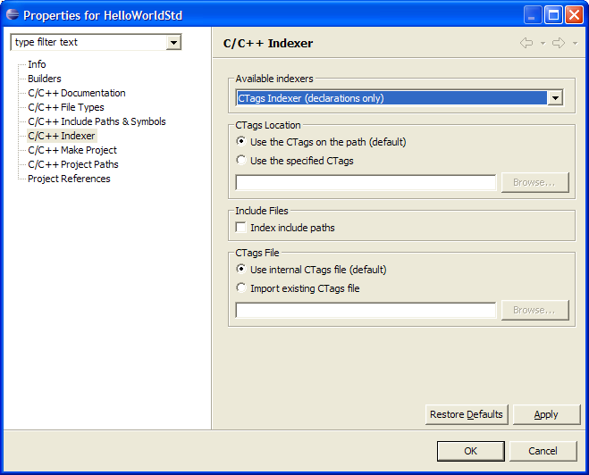
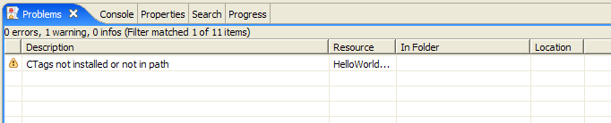
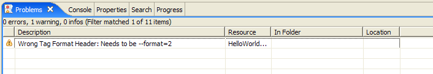

Enable/Disable CTags Indexer
Users can choose which indexer they wish to use on a specific
project by bringing up the project properties and
selecting an indexer from the available indexer list.

Enable CTags Indexer
Enabling the indexer
To enable the CTags Indexer:
- Right click on the project and select Properties > C/C++
Indexer
- Select the CTags Indexer (declarations only) from the
list of available indexers
- Click OK
This will throw away whatever old index was around for the current
project and start a new reindex of the entire project using the CTags
indexer and whatever options are present on the property page.
CTags Location
By default, the CTags Indexer expects that Ctags has been added to the
path and will try to use it. To use another CTags:
- Right click on the project and select Properties > C/C++
Indexer
- Click the Use the specified CTags button
- Click on the Browse...
button
- Navigate to the location of the desired CTags
- Select the CTags executable and click Open
The path of the given CTags executable is displayed in the CTags
location box. When indexing the current project from now
on, the CTags indexer will now use whatever CTags is displayed on the
path.
If the CTags indexer can't find the location of your CTags or can't use
the specified CTags it will let you know in the form
of a warning marker.

Include Files
Checking this box will cause the CTags indexer to index all of the
files on the project's include paths.
CTags File
By default, the CTags indexer runs CTags on your project and stores the
output in an internal file before adding the entries
to the index. If you have an already existing CTag output file, you can
get import it into the index. To do this:
- Right click on the project and select Properties > C/C++
Indexer
- Click the Import existing CTags
file button
- Browse to the CTags location
- Click OK
- Close and reopen the
project
The CTags Indexer will now attempt to import your CTags file.
Note that the CTags indexer expects a certain format for the CTags
file. In order for an external file to be imported
by the CTags indexer, the following conditions must be met:
- Exuberant CTags version 5.5.4 was used
- The following options are run with CTags:
- --excmd=number
- --format=2
- --fields=aiKlmnsSz
- --c-types=cdefgmnpstuvx
- --c++-types=cdefgmnpstuvx
- --languages=c,c++
If the CTags indexer cannot parse the given CTag file it will tell you
what the problem is in the form of a warning marker:

Disable CTags Indexer
To disable the CTags Indexer:
- Right click on the project and select Properties > C/C++
Indexer
- Select the No Indexer (search
based features will not work correctly)
- Click OK
This will stop any ongoing indexes and disconnect the project from
reacting to resource changes.

C/C++ search
C/C++ Indexer
C/C++ Indexer Problem
Reporting
C/C++ Indexer
Opening or Closing a project
C/C++ Indexer Progress
Bar

Selection Searching for C/C++
elements
Enable/Disable the C/C++
Indexer
C/C++ Indexer - Indexer
Timeout
Setting Source Folders

Search, C/C++ Preferences
window
C/C++ search page, Search
dialog box
C/C++ Project
Properties, Managed, Indexer
C/C++ Project
Properties, Standard, Indexer